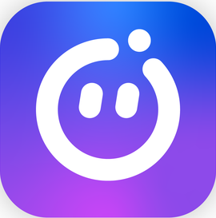

Category: AI · Device Control · Productivity
0+ downloads
Before using VCall AI, please make sure the following settings are enabled on your device.
⚠️ Set VCall AI as your Default Assistant App
⚠️ Enable Accessibility Service to allow voice automation and touchless device control.
⚠️ Enable Notification Access so the assistant can read notifications and respond to messages.
⚠️ Disable Battery Optimization / App Restrictions to allow the assistant to work properly in the background.
⚠️ Allow all required permissions manually if your device blocks automation features.
⚠️ Google Play Protect or device security settings may require manual approval for certain automation features.
These permissions are used only for assistant functionality.
No personal data is collected, stored, or shared.
VCall AI is a powerful AI-based assistant that allows you to control both your
Android phone and your Desktop / Laptop (Windows) using voice commands.
One AI — control multiple devices effortlessly.
✅ Control your Android phone with voice commands
✅ Control your desktop or laptop remotely
✅ Advanced voice-command automation
✅ Launch apps instantly using voice
✅ Hands-free phone operation
✅ Manage files, tools, and system actions
✅ Use the same AI across multiple devices
📱 Voice Commands
Control your phone hands-free using natural voice commands.
📱 App Launch by Voice
Open applications instantly by saying commands like
"Open YouTube", "Launch WhatsApp", or "Start Camera".
📱 Touchless Phone Control
The assistant can simulate taps, scrolling, and navigation using accessibility automation.
📱 Auto Messaging
Send messages to apps like WhatsApp, Discord, and other messaging platforms using voice commands.
📱 Voice Reply Without Opening Apps
Respond to incoming messages directly without opening the messaging application.
📱 Notification Listener
The assistant can read notifications and trigger actions automatically.
📱 Music Control
Play, pause, skip, or control music using voice commands.
📱 Smart Alarms & Reminders
Set alarms, reminders, and schedules with voice commands.
📱 App Blocker
Block distracting apps during focus time or work sessions.
🤖 Offline AI Engine
Use the assistant even without an internet connection.
🧠 Custom AI Training
Train the assistant with custom commands and personalized datasets.
⚙️ AI Customization
Customize assistant behavior, commands, and responses.
🎤 Voice Customization
Change the assistant’s voice style, tone, and personality.
🛠️ AI Modification System
Extend and modify assistant capabilities using modular features.
🧝♀️ VRM Waifu Model
A fully animated VRM waifu AI assistant interface.
👀 Waifu Model Watcher
The AI character reacts to user interactions and commands.
💻 Desktop Voice Control
Control your computer using voice commands.
💻 Program Launcher
Open applications and tools instantly.
💻 System Control
Shutdown, restart, open files, or manage system tools.
💻 Automation Commands
Automate tasks and workflows using voice instructions.
💻 Unified AI System
Use the same AI assistant across both phone and desktop devices.
🔒 Privacy First
VCall AI respects your privacy.
No personal data is collected, stored, or shared.
Accessibility and notification permissions are used strictly to enable voice automation and assistant functionality.
Your data always stays on your device.

.jpeg)


Version: v1.0.0
⚠ Both Android & Desktop versions are required for full control experience